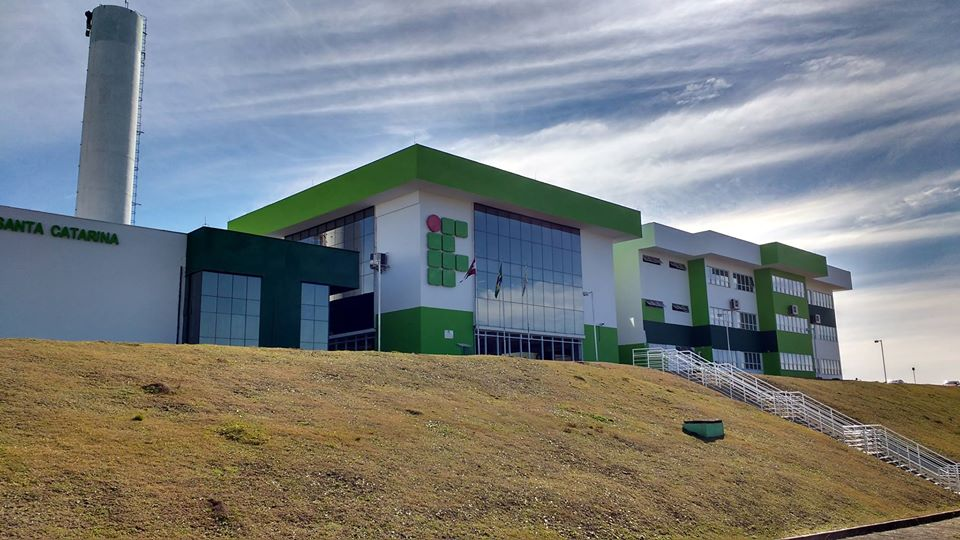

<!-- Container for sidebar(s) + page content -->
<ng-sidebar-container style="height: 100vh;">

    <!-- A sidebar -->
    <ng-sidebar [mode]="'slide'" [(opened)]="opened">
        <div>

            <!--Itens superiores da sidebar-->
            <div style="position: relative; left: 0; top: 0;">
                
                
                
                <h5>{{usuario.Nome}}</h5>
            </div>

            <!--Lista de botões-->
            <ul>
                <li><button routerLink="dashboard" (click)="toggleSidebar()" class="listaBotoesSidebar">
                        <div class="icon baseline">
                            <svg width="1em" height="1em" viewBox="0 0 16 16" class="bi bi-bar-chart"
                                fill="currentColor" xmlns="http://www.w3.org/2000/svg">
                                <path fill-rule="evenodd"
                                    d="M4 11H2v3h2v-3zm5-4H7v7h2V7zm5-5h-2v12h2V2zm-2-1a1 1 0 0 0-1 1v12a1 1 0 0 0 1 1h2a1 1 0 0 0 1-1V2a1 1 0 0 0-1-1h-2zM6 7a1 1 0 0 1 1-1h2a1 1 0 0 1 1 1v7a1 1 0 0 1-1 1H7a1 1 0 0 1-1-1V7zm-5 4a1 1 0 0 1 1-1h2a1 1 0 0 1 1 1v3a1 1 0 0 1-1 1H2a1 1 0 0 1-1-1v-3z" />
                            </svg>
                        </div>
                        &nbsp;&nbsp;&nbsp;Dashboard
                    </button></li>
                <li><button routerLink="simulado" (click)="toggleSidebar()" class="listaBotoesSidebar">
                        <div class="icon baseline">
                            <svg width="1em" height="1em" viewBox="0 0 16 16" class="bi bi-card-list"
                                fill="currentColor" xmlns="http://www.w3.org/2000/svg">
                                <path fill-rule="evenodd"
                                    d="M14.5 3h-13a.5.5 0 0 0-.5.5v9a.5.5 0 0 0 .5.5h13a.5.5 0 0 0 .5-.5v-9a.5.5 0 0 0-.5-.5zm-13-1A1.5 1.5 0 0 0 0 3.5v9A1.5 1.5 0 0 0 1.5 14h13a1.5 1.5 0 0 0 1.5-1.5v-9A1.5 1.5 0 0 0 14.5 2h-13z" />
                                <path fill-rule="evenodd"
                                    d="M5 8a.5.5 0 0 1 .5-.5h7a.5.5 0 0 1 0 1h-7A.5.5 0 0 1 5 8zm0-2.5a.5.5 0 0 1 .5-.5h7a.5.5 0 0 1 0 1h-7a.5.5 0 0 1-.5-.5zm0 5a.5.5 0 0 1 .5-.5h7a.5.5 0 0 1 0 1h-7a.5.5 0 0 1-.5-.5z" />
                                <circle cx="3.5" cy="5.5" r=".5" />
                                <circle cx="3.5" cy="8" r=".5" />
                                <circle cx="3.5" cy="10.5" r=".5" />
                            </svg>
                        </div>
                        &nbsp;&nbsp;&nbsp;Criar Simulado
                    </button></li>
                <li><button routerLink="sala" (click)="toggleSidebar()" class="listaBotoesSidebar">
                        <div class="icon baseline">
                            <svg width="1em" height="1em" viewBox="0 0 16 16" class="bi bi-easel" fill="currentColor"
                                xmlns="http://www.w3.org/2000/svg">
                                <path
                                    d="M8.473.337a.5.5 0 0 0-.946 0L6.954 2h2.092L8.473.337zM12.15 11h-1.058l1.435 4.163a.5.5 0 0 0 .946-.326L12.15 11zM8.5 11h-1v2.5a.5.5 0 0 0 1 0V11zm-3.592 0H3.85l-1.323 3.837a.5.5 0 1 0 .946.326L4.908 11z" />
                                <path fill-rule="evenodd"
                                    d="M14 3H2v7h12V3zM2 2a1 1 0 0 0-1 1v7a1 1 0 0 0 1 1h12a1 1 0 0 0 1-1V3a1 1 0 0 0-1-1H2z" />
                            </svg>
                        </div>
                        &nbsp;&nbsp;&nbsp;Participar da Sala
                    </button></li>
                <li><button routerLink="configuracoes" (click)="toggleSidebar()" class="listaBotoesSidebar">
                        <div class="icon baseline">
                            <svg width="1em" height="1em" viewBox="0 0 16 16" class="bi bi-sliders" fill="currentColor"
                                xmlns="http://www.w3.org/2000/svg">
                                <path fill-rule="evenodd"
                                    d="M14 3.5a2.5 2.5 0 1 1-5 0 2.5 2.5 0 0 1 5 0zM11.5 5a1.5 1.5 0 1 0 0-3 1.5 1.5 0 0 0 0 3zM7 8.5a2.5 2.5 0 1 1-5 0 2.5 2.5 0 0 1 5 0zM4.5 10a1.5 1.5 0 1 0 0-3 1.5 1.5 0 0 0 0 3zm9.5 3.5a2.5 2.5 0 1 1-5 0 2.5 2.5 0 0 1 5 0zM11.5 15a1.5 1.5 0 1 0 0-3 1.5 1.5 0 0 0 0 3z" />
                                <path fill-rule="evenodd"
                                    d="M9.5 4H0V3h9.5v1zM16 4h-2.5V3H16v1zM9.5 14H0v-1h9.5v1zm6.5 0h-2.5v-1H16v1zM6.5 9H16V8H6.5v1zM0 9h2.5V8H0v1z" />
                            </svg>
                        </div>
                        &nbsp;&nbsp;&nbsp;Configurações
                    </button></li>
                <li><button routerLink="suporte" (click)="toggleSidebar()"  class="listaBotoesSidebar">
                        <div class="icon baseline">
                            <svg width="1em" height="1em" viewBox="0 0 16 16" class="bi bi-life-preserver"
                                fill="currentColor" xmlns="http://www.w3.org/2000/svg">
                                <path fill-rule="evenodd"
                                    d="M8 15A7 7 0 1 0 8 1a7 7 0 0 0 0 14zm0 1A8 8 0 1 0 8 0a8 8 0 0 0 0 16z" />
                                <path fill-rule="evenodd"
                                    d="M8 11a3 3 0 1 0 0-6 3 3 0 0 0 0 6zm0 1a4 4 0 1 0 0-8 4 4 0 0 0 0 8z" />
                                <path
                                    d="M11.642 6.343L15 5v6l-3.358-1.343A3.99 3.99 0 0 0 12 8a3.99 3.99 0 0 0-.358-1.657zM9.657 4.358L11 1H5l1.343 3.358A3.985 3.985 0 0 1 8 4c.59 0 1.152.128 1.657.358zM4.358 6.343L1 5v6l3.358-1.343A3.985 3.985 0 0 1 4 8c0-.59.128-1.152.358-1.657zm1.985 5.299L5 15h6l-1.343-3.358A3.984 3.984 0 0 1 8 12a3.99 3.99 0 0 1-1.657-.358z" />
                            </svg>
                        </div>
                        &nbsp;&nbsp;&nbsp;Suporte
                    </button></li>
                <li><button (click)="logout()" class="listaBotoesSidebar">
                        <div class="icon baseline">
                            <svg width="1em" height="1em" viewBox="0 0 16 16" class="bi bi-box-arrow-in-right"
                                fill="currentColor" xmlns="http://www.w3.org/2000/svg">
                                <path fill-rule="evenodd"
                                    d="M8.146 11.354a.5.5 0 0 1 0-.708L10.793 8 8.146 5.354a.5.5 0 1 1 .708-.708l3 3a.5.5 0 0 1 0 .708l-3 3a.5.5 0 0 1-.708 0z" />
                                <path fill-rule="evenodd"
                                    d="M1 8a.5.5 0 0 1 .5-.5h9a.5.5 0 0 1 0 1h-9A.5.5 0 0 1 1 8z" />
                                <path fill-rule="evenodd"
                                    d="M13.5 14.5A1.5 1.5 0 0 0 15 13V3a1.5 1.5 0 0 0-1.5-1.5h-8A1.5 1.5 0 0 0 4 3v1.5a.5.5 0 0 0 1 0V3a.5.5 0 0 1 .5-.5h8a.5.5 0 0 1 .5.5v10a.5.5 0 0 1-.5.5h-8A.5.5 0 0 1 5 13v-1.5a.5.5 0 0 0-1 0V13a1.5 1.5 0 0 0 1.5 1.5h8z" />
                            </svg>
                        </div>
                        &nbsp;&nbsp;&nbsp;Sair
                    </button></li>
            </ul>


        </div>
    </ng-sidebar>

    <!-- Page content -->
    <div ng-sidebar-content>
        <nav class="navbar">
            <button class="botaoAbrirSidebar" *ngIf="!opened" (click)="toggleSidebar()">
                <svg width="1.5em" height="1.5em" viewBox="0 0 16 16" class="bi bi-chevron-right" fill="currentColor"
                    xmlns="http://www.w3.org/2000/svg">
                    <path fill-rule="evenodd"
                        d="M4.646 1.646a.5.5 0 0 1 .708 0l6 6a.5.5 0 0 1 0 .708l-6 6a.5.5 0 0 1-.708-.708L10.293 8 4.646 2.354a.5.5 0 0 1 0-.708z" />
                </svg>
            </button>

            <button class="botaoAbrirSidebar" *ngIf="opened" (click)="toggleSidebar()">
                <svg width="1.5em" height="1.5em" viewBox="0 0 16 16" class="bi bi-chevron-left" fill="currentColor"
                    xmlns="http://www.w3.org/2000/svg">
                    <path fill-rule="evenodd"
                        d="M11.354 1.646a.5.5 0 0 1 0 .708L5.707 8l5.647 5.646a.5.5 0 0 1-.708.708l-6-6a.5.5 0 0 1 0-.708l6-6a.5.5 0 0 1 .708 0z" />
                </svg>
            </button>
            <h3 class="titulo">Dashboard</h3>
        </nav>
        <router-outlet></router-outlet>
    </div>
</ng-sidebar-container>